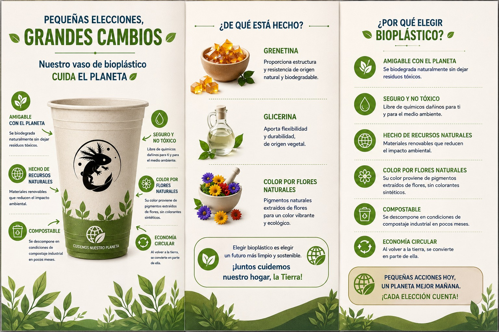
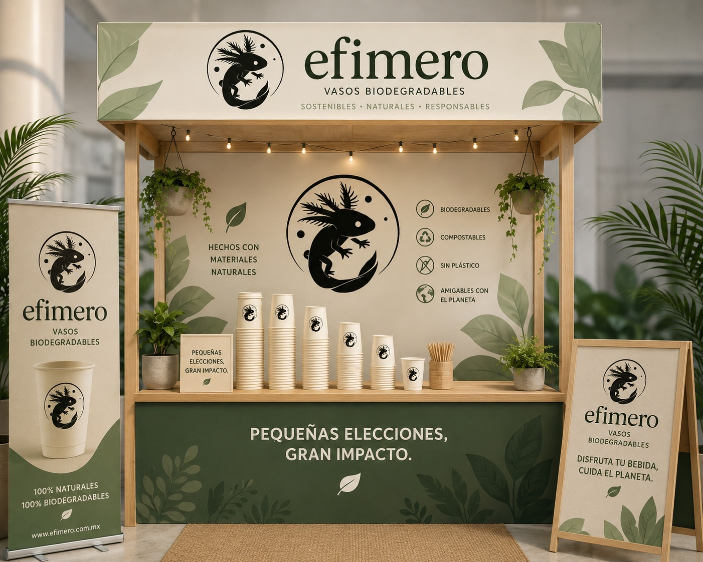
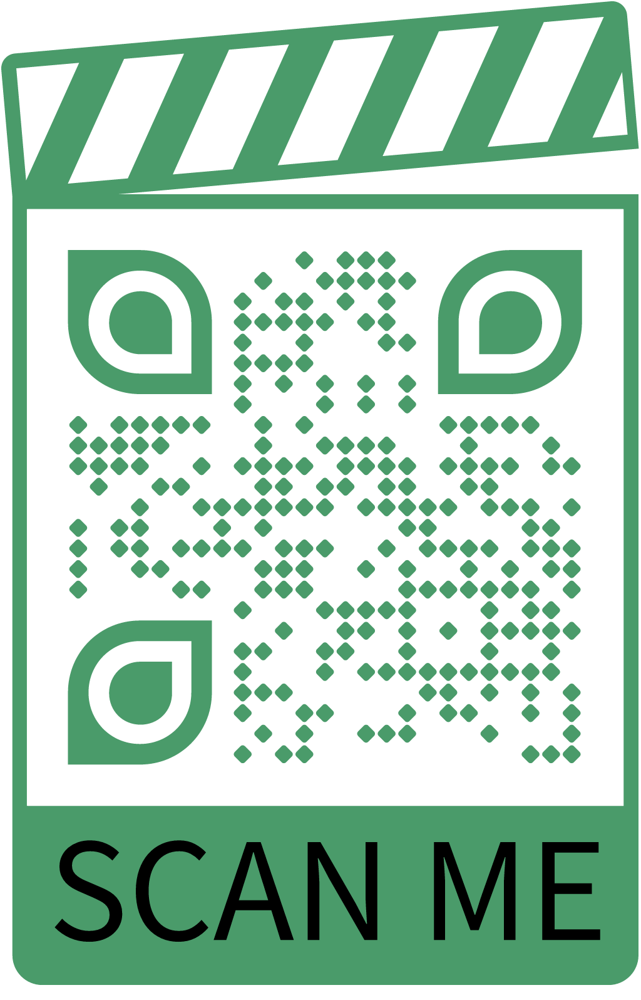
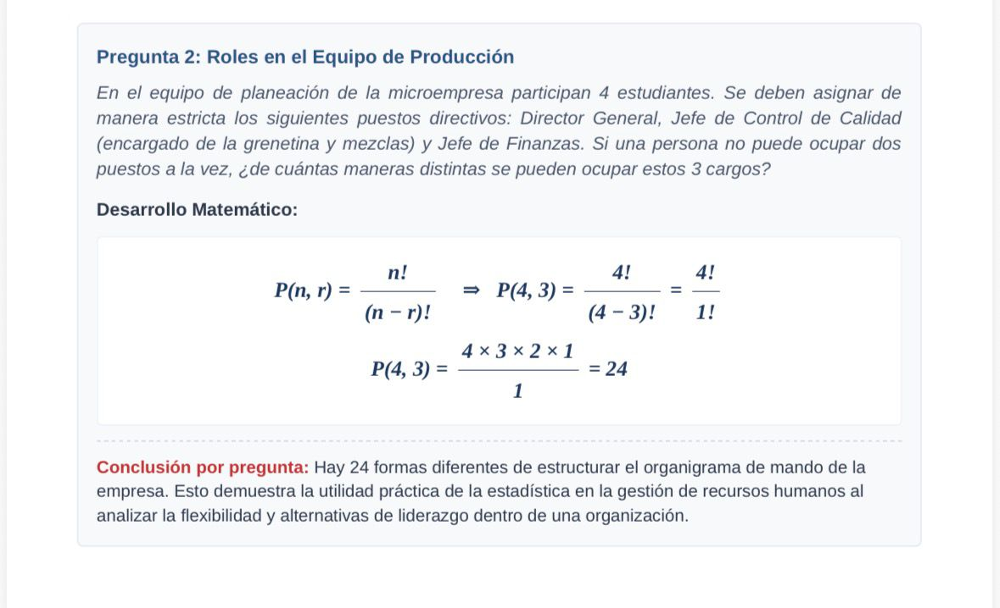
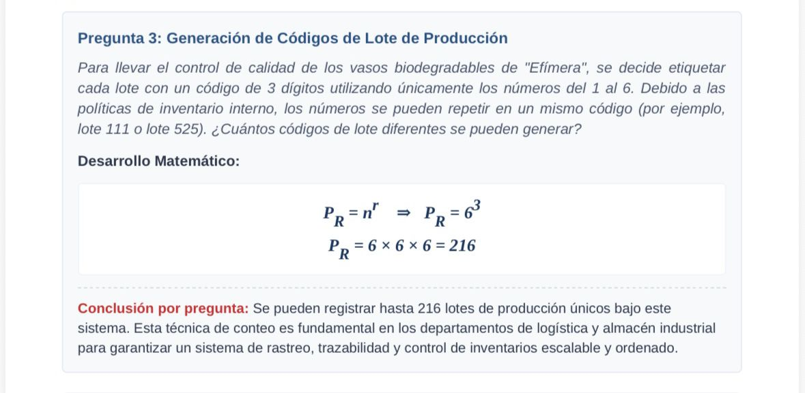
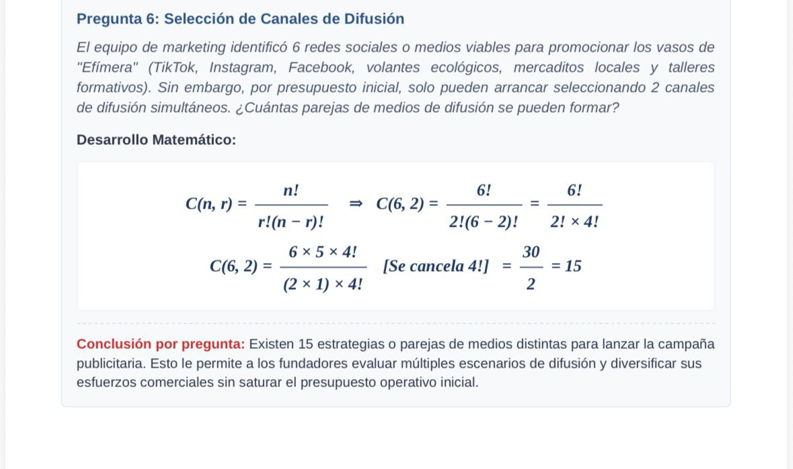
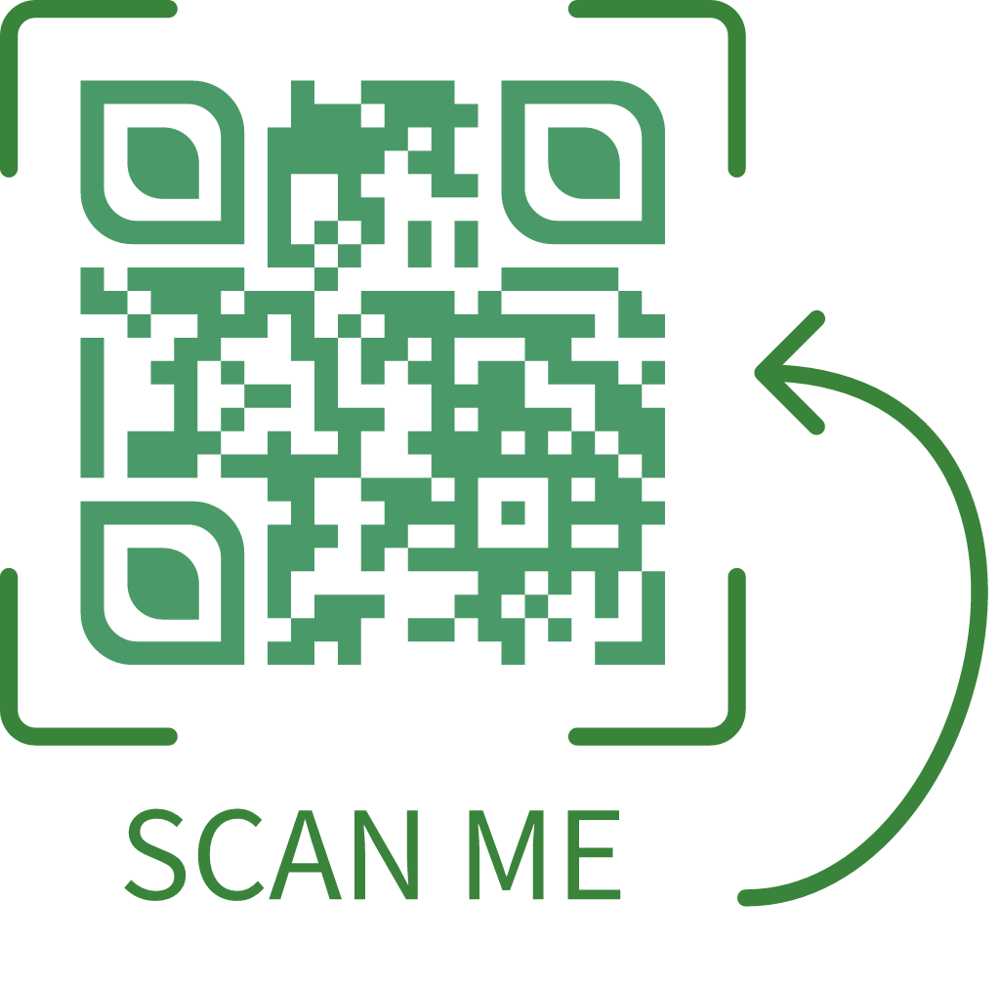

¿Qué es Efímero?
Proyecto Integrador Colaborativo
efímero es un emprendimiento sustentable enfocado en la fabricación y comercialización de vasos biodegradables diseñado como una alternativa ecológica de alto impacto frente a los tradicionales contenedores desechables de plástico o unicel. Nuestro propósito fundamental es mitigar la contaminación ambiental y reducir activamente la acumulación de residuos sólidos en nuestra comunidad.
🎯 Misión
Desarrollar y comercializar soluciones de empaque biodegradables de alta calidad, asumiendo un compromiso firme con la preservación del medio ambiente a través de la sustitución de plásticos convencionales, disminuyendo la huella ecológica y generando valor social en el entorno.
👁️ Visión
Consolidarse como una marca líder y un referente de innovación en el sector de empaques sostenibles a nivel regional, promoviendo de manera responsable la erradicación de plásticos convencionales y transformando la cultura de consumo hacia un modelo circular y respetuoso con la naturaleza.

Biodegradable
Descomposición orgánica natural en un menor periodo de tiempo.
Sustentable
Fomenta prácticas responsables y equilibrio con la naturaleza.
Nuestra Propuesta
Nuestra propuesta de valor consiste en ofrecer vasos biodegradables de forma artesanal a base de materiales orgánicos accesibles: grenetina, glicerina vegetal pura y agua. Nos enfocamos en estudiantes y pequeños vendedores de bebidas ubicados dentro y alrededor del entorno escolar en el Valle de Toluca.
Simulador de Degradación de Bioplástico
¿Te interesa implementar vasos efímero?
El cliente paga un costo accesible de $7.00 pesos por unidad, adquiriendo un artículo práctico y local que apoya directamente al cuidado del planeta.
📲 Enviar WhatsApp ComercialIdentidad y Stand
La estética del proyecto se expresa a través del diseño de nuestra marca e infraestructura. Proponemos una experiencia física que destaca por un stand de concepto minimalista y ecológico, elaborado en maderas claras de tonos orgánicos combinados con una paleta cromática verde, blanca y beige, complementado con plantas colgantes que refuerzan el mensaje visual de frescura y pureza.

Concepto de Marca
La identidad visual de efímero fue diseñada estratégicamente para comunicar de manera directa nuestros valores teóricos y de respeto a la biodiversidad. A continuación se presenta el emblema oficial y su correspondiente justificación de diseño:
🧬 El Ajolote Mexicano
Es la figura central del emblema. Elegido como símbolo biológico e identidad nacional mexicana, representa nuestra conexión con la conservación de los ecosistemas acuáticos y la urgencia de proteger la naturaleza.
🔄 Composición Circular
El círculo que envuelve al ajolote evoca la continuidad, el equilibrio perfecto y el ciclo de vida natural, lo cual está directamente alíneado con la economía circular y la sustentabilidad de la marca.
⚫ Contraste Minimalista
La simplicidad del blanco y negro proyecta solidez, seriedad y elegancia en nuestras prácticas responsables, eliminando distractores visuales para centrar la atención en la esencia pura del producto.
El cambio comienza contigo
Toda la ciudadanía contribuye a la reducción de la contaminación por plásticos convencionales mediante acciones de consumo responsable y conciencia ambiental. Cada vez más personas optan por utilizar productos reutilizables y biodegradables, como bolsas de tela, termos y vasos ecológicos, disminuyendo así la generación de residuos plásticos.
Además, las campañas en redes sociales, movimientos ambientales y programas de reciclaje han ayudado a informar y sensibilizar a la población sobre los daños que el plástico causa en los ecosistemas y en la salud. Gracias a esta participación ciudadana, muchas empresas y gobiernos han implementado medidas como la prohibición de ciertos plásticos y el impulso de alternativas sostenibles.
En conjunto, la participación de la ciudadanía global demuestra que las pequeñas acciones individuales pueden generar un impacto positivo en la protección del medio ambiente y en la construcción de un futuro más sostenible.

Herramientas de Análisis para la Toma de Decisiones
La estadística es una herramienta fundamental en el ámbito empresarial, ya que permite analizar información, organizar datos y tomar decisiones de manera más eficiente. A través de técnicas como las permutaciones y combinaciones, las empresas pueden resolver problemas relacionados con la organización, la producción, el control de calidad, la logística y la planeación de estrategias comerciales.
En el proyecto “Efímero”, enfocado en la elaboración de vasos biodegradables, la aplicación de estas técnicas matemáticas ayuda a comprender cómo optimizar procesos dentro de la microempresa, desde la distribución de productos y asignación de roles hasta la selección de muestras y estrategias de difusión. De esta manera, la estadística no solo facilita el análisis de diferentes escenarios, sino que también contribuye al desarrollo de soluciones innovadoras y sostenibles dentro del entorno empresarial.

1. Permutación
2. Permutaciones con reemplazo
3. Combinaciones sin repeticiónConductas que cambian el mundo
La adolescencia es una etapa de cambios físicos, emocionales y sociales en la que las personas comienzan a formar su identidad, desarrollar valores y tomar decisiones más conscientes sobre su entorno. Desde la psicología, esta etapa es importante porque los adolescentes aprenden conductas, hábitos y formas de pensar que influirán en su vida futura. En este contexto, el uso y promoción de vasos desechables biodegradables se relaciona con el desarrollo de la responsabilidad social y ambiental, ya que fomenta una mayor conciencia sobre el cuidado del planeta y las consecuencias de nuestras acciones.
Además, durante la adolescencia existe una gran influencia del entorno social, las tendencias y la necesidad de generar cambios positivos dentro de la comunidad. Por ello, proyectos sostenibles como los vasos biodegradables no solo representan una alternativa ecológica, sino también una oportunidad para que los jóvenes participen activamente en la construcción de hábitos responsables y en la promoción de una cultura ambiental más consciente. De esta manera, la psicología ayuda a comprender cómo las actitudes, emociones y comportamientos de los adolescentes pueden contribuir al desarrollo de soluciones sostenibles para la sociedad.
Las normas sociales, los factores culturales y la conducta individual y grupal influyen directamente en la forma en que las personas consumen y utilizan productos de plástico. Durante muchos años, el uso de vasos, bolsas y envases desechables se volvió una práctica común dentro de la sociedad debido a la comodidad y rapidez que ofrecen. Sin embargo, estas costumbres han generado un gran impacto ambiental, provocando contaminación en mares, ríos y ecosistemas.
En este contexto, los plásticos biodegradables surgen como una alternativa más sostenible que busca reducir el daño al medio ambiente. La aceptación y el uso de estos productos dependen en gran parte de la conciencia social, la educación ambiental y la influencia de grupos como la familia, la escuela y la comunidad. Cuando las personas observan conductas responsables en su entorno, es más probable que adopten hábitos ecológicos y participen en acciones para disminuir la contaminación. De esta manera, la conducta humana y las normas culturales tienen un papel fundamental en la construcción de una sociedad más consciente y comprometida con el cuidado del planeta.

Impacto social del plástico
El uso excesivo de plásticos se ha convertido en una problemática que afecta tanto al medio ambiente como a la sociedad. Debido a la comodidad y facilidad que ofrecen, productos como vasos, bolsas y envases desechables forman parte de la vida cotidiana de millones de personas. Sin embargo, esta práctica ha provocado un aumento considerable en la contaminación de calles, ríos, mares y áreas naturales, afectando la calidad de vida y el equilibrio de los ecosistemas.
La acumulación de residuos plásticos genera problemas en muchas comunidades, ya que los desechos tardan años en degradarse y dificultan el manejo adecuado de la basura. Esta situación demuestra la importancia de crear una mayor conciencia sobre nuestros hábitos de consumo y las consecuencias que tienen en el entorno.
Ante esta problemática, los vasos biodegradables representan una alternativa sostenible que busca reducir el impacto ambiental y promover prácticas más responsables. A través de pequeños cambios en nuestras decisiones diarias, es posible contribuir al cuidado del planeta y fomentar una cultura basada en la responsabilidad ambiental y el bienestar colectivo.
Morfología
A continuación se presenta el reporte detallado que describe la estructura, diseño y características de los productos desarrollados en el proyecto. Este documento analiza la morfología de nuestras soluciones sostenibles desde una perspectiva técnica y funcional:
El futuro se construye hoy
Gracias por visitar nuestra página y conocer más sobre este proyecto. Nuestro objetivo es crear conciencia sobre el impacto que los plásticos tienen en el medio ambiente y demostrar que pequeñas acciones pueden generar grandes cambios. A través de nuestros vasos biodegradables, buscamos ofrecer una alternativa más sostenible y amigable con el planeta, promoviendo hábitos de consumo responsables y una mayor preocupación por el cuidado de nuestro entorno.
Esperamos que esta iniciativa inspire a más personas a sumarse al cambio y a tomar decisiones que ayuden a construir un futuro más limpio, saludable y sostenible para todos. Cada elección cuenta, y juntos podemos marcar la diferencia.